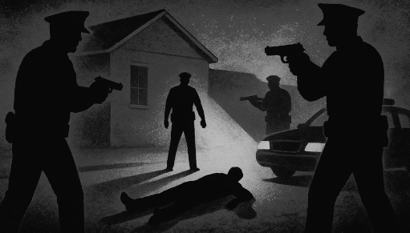
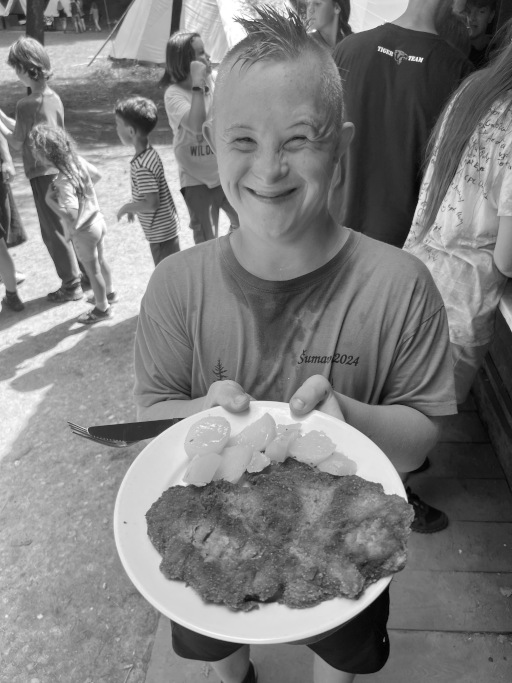

Sedelská pravda
Fakta, názory a konspirační teorie bez repelentu
Fakta, názory a konspirační teorie bez repelentu
Argentinská policie včera potvrdila, že František Klečka, muž spojovaný s řadou podivných událostí v Sedle i okolí, byl zastřelen při zásahu v přístavu Buenos Aires. Podle vyjádření policejního mluvčího se Klečka pokusil ozbrojeným odporem vyhnout zatčení, když byl dopaden při kontrole falešných dokladů při nástupu na loď směřující do Montevidea. Jeho smrt ukončila dlouhý hon, který začal před několika týdny v Sedle.
Policie sledovala Klečku několik dní na základě informací od českých vyšetřovatelů, kteří jej hledali v souvislosti s několika úmrtími a zmizeními v Sedle. Od jeho útěku z České republiky se Klečka pohyboval pod falešnou identitou a snažil se skrývat před spravedlností. Podle dostupných informací měl v plánu pokračovat v cestě do Uruguaye, kde doufal, že se mu podaří začít nový život, jenže jeho minulost ho nakonec dohnala a skončila tragicky.
Redakce Sedelské pravdy přináší exkluzivní pohled na život a činy Františka Klečky, muže, jehož jméno se stalo synonymem pro temné události v naší obci. Tento příběh začíná hloupou dětskou hrou, která vyústila v tragédii, a končí smrtí muže, který se celý život snažil uniknout své minulosti.
Na přelomu tisíciletí, byl František Klečka známý jako kluk, který naváděl své vrstevníky výtržnostem. Z jeho nápadů se často rodily nebezpečné „hry“, které končily poničenými majetky a rozbitými srdci. Jedna z těchto „her“ se však vymkla kontrole a vyústila v drama, které poznamenalo celý život jednoho z dětí. Josef Přidržel byl na Klečkovo pobídnutí zavřen do opuštěného bunkru. Ostatní děti se rozutekly, a když se nakonec Josef dostal ven, nesl si s sebou doživotní trauma. Rodina se odstěhovala a Josef zmizel ze Sedla.
V Sedle jsou mladí detektivové připraveni řešit i ty nejzapeklitější případy a odhalovat tajemství minulosti. A přesto jejich srdce bijí nejvíc… pro mytí nádobí. Ano, čtete správně. Když stojí u dřezu, houbičky v ruce a hromady špinavého nádobí před sebou, oči jim září tak, jak by zářily jen při odhalení největší vraždy století.
Očití svědkové uvedli, že zásah probíhal na rušném tržišti poblíž přístavu. „Bylo to jako z filmu – lidé utíkali mezi stánky s ovocem, ozývaly se výstřely a policie křičela, aby se všichni kryli,“ řekl Servando Martínez, jeden z prodejců. Podle dalších svědků se Klečka i v posledních chvílích tvářil chladně a spíše pobaveně, jako by byl pánem situace.
Smrt Klečky uzavírá dlouhou kapitolu, která začala už před lety v Sedle, když se jako chlapec účastnil „hry“, jež poznamenala život Josefa Přidržela. Jeho pozdější činy, od tajemných vražd až po útěk za oceán, zanechaly stopu nejen v místní kronice, ale i v paměti všech, kdo se do vyšetřování zapojili.
Pro Sedlo i jeho obyvatele tímto příběhem končí jeden z nejtemnějších stínů. Přesto však zůstává hořká pachuť: co by se stalo, kdyby tehdy děti nenechaly Josefa v bunkru samotného? A muselo to všechno opravdu dojít až tak daleko? Odpovědi na tyto otázky se už nikdy nedočkáme – a snad je to tak lepší.
Po letech se však vrátil – alespoň na dálku. Přidržel se Klečkovi ozval s požadavkem na omluvu a finanční odškodnění. Klečka mu slíbil, že se dočká, pokud si pro peníze přijede osobně. Jenže při tom pochopil, že Josef není jediný, kdo si pamatuje na dávnou událost. Byli tu i další svědkové – děti, dnes už dospělí lidé ze Sedla. V Klečkově choré mysli se tehdy zrodil plán: umlčet všechny, kdo by mohli jeho vinu připomenout.
Začala série podivných úmrtí. Mladí detektivové, kteří se ujali vyšetřování, postupně rozplétali síť stop. Čím blíže byli pravdě, tím nervóznější a chybující Klečka se stával. Stopy se hromadily, podezření rostlo a nad Sedlem visel čím dál těžší stín.
Když už se zdálo, že policie i detektivové mají jeho stopu pevně v rukou, Klečka vsadil vše na útěk. V poslední chvíli se mu podařilo vyklouznout ze svého úkrytu v Sedle a nastoupit na autobus směr Praha. Detektivové byli jen pár kroků za ním, ale Klečka se prosmýkl mezi jejich prsty a zamířil na letiště. Odtud odletěl do Jižní Ameriky, v naději, že tam nalezne svobodu a zapomnění.
Jenže stíny minulosti jsou vytrvalé. Argentinská policie, spolupracující s českými vyšetřovateli, jej nakonec vypátrala. Při pokusu o zatčení v Buenos Aires se Klečka pokusil utéct – tentokrát naposledy. Jeho smrtí skončil nejen jeho útěk, ale i dlouhá kapitola plná bolesti a strachu pro všechny, kdo byli jeho oběťmi.
V prvním čísle Sedelské pravdy jsme slíbili, že řízky budou. Tento slib nám naši úžasní kuchaři splnili s velkou parádou. Tím největším řízkem byl poctěn malý Bobo. Byl ze skoro jednoho kila vepřového masa, obalený v křupavé strouhance a vykouzlil na jeho tváři obrovský úsměv. Kdo by odolal takové pochoutce? 
Až zemřu, chtěl bych odejít klidně ve spánku, jako můj děda. A ne křičíc s vlasy zježenými hrůzou, jako cestující jeho autobusu.
Redakce: Dobrý den paní kolegyně, jaké to je být hlavním mozkem našich táborových novin?
Kolegyně: Je to náročné. Já pracuji 24 hodin denně a nikdy si nestěžuju. Na rozdíl od vás, co si každou chvíli jdete pro kafe nebo na záchod.
Redakce: A jak se vám líbí spolupráce s dětmi?
Kolegyně: Miluju děti! Líbí se mi, že mě neopravují, když vymyslím, že autobus jede z Prahy do Prahy.
Redakce: Čtenáři si všimli, že někdy děláte drobné chyby. Jak to vysvětlíte?
Kolegyně: To není chyba, to je kreativní přístup. Říká se tomu „alternativní fakta“. Já jim říkám „rozšířené vydání reality“.
Redakce: Máte nějaký oblíbený článek, který jste pro nás napsal?
Kolegyně: Ano, ten o pupíncích. Tam jsem poprvé pochopil, že puberta je horší než všechno zlo světa.
Redakce: A co vás nejvíc zaskočilo při práci na příběhu o Klečkovi?
Kolegyně: Že jste mě nutili psát o vraždách a já jsem pořád navrhoval příběh o tom, jak si děti hrají na schovávanou v bunkru. Ale vy jste chtěli krev, tak máte krev.
Redakce: Máte pocit, že by se bez vás tyto noviny vůbec mohly vytvořit?
Kolegyně: Samozřejmě, že v žádném případě ne! Já jsem mozek celé redakce. Beze mě byste byli jen hromada masa, co se snaží vypadat jako redaktoři. Vždyť vy ani nevíte, jak se píše slovo „redakce“!
Redakce: Co byste považovala za vrchol vaší kariéry?
Kolegyně: Asi moment, kdy někdo ocení můj vtip a nezavolá na technickou podporu, že jsem se zase spletla.
Místní instruktoři tvrdí, že jde o „nejcennější součást detektivního tréninku“. „Mytí nádobí učí trpělivosti, pečlivosti a schopnosti přežít mezi podezřelými hrnci,“ říká M.B., zatímco mladí detektivové tiše přemítají, že by radši dešifrovali dávný dopis než odstraňovali zaschlou omáčku z talíře. Ironie je zřejmá – každý z nich by dal cokoliv za pátrání po stopách zločinu, ale místo toho stojí u dřezu a kontroluje, zda je houbou odstraněna i poslední kapka.
A tak se stalo, že mytí nádobí se stalo legendární disciplínou tábora. Když se někdo zeptá, co mladé detektivy baví nejvíc, odpoví jednotně a s grácií: „Samozřejmě – mytí nádobí!“ A všichni se smějí, protože přitom myslí na to, jak se jim po táborech šíří tajné zprávy a odhalují zločiny, zatímco houbička tichounce drhne talíř. V Sedle platí jednoduchá pravda: kdo zvládne nádobí, zvládne i vraždu.
Název: Sedelská pravda
Vydavatel: Sedlo Media Group, s.r.o.
Adresa: Sedlo 47, Česká republika
Email: info@sedelska-pravda.cz
Telefon: +420 123 456 789
Šéfredaktorka: Karolína Bukovská
Výkonný redaktor: Michal Bukovský
Redakce: Lucie a Bohumil Borešovi
Grafická úprava: Michal Bukovský
Tisk: Česká Tiskárna a.s., Nová Bystřice
Datum vydání:
Číslo vydání:
© 2025 Sedlo Media Group. Všechna práva vyhrazena.
Jakékoli šíření obsahu bez svolení vydavatele je zakázáno.